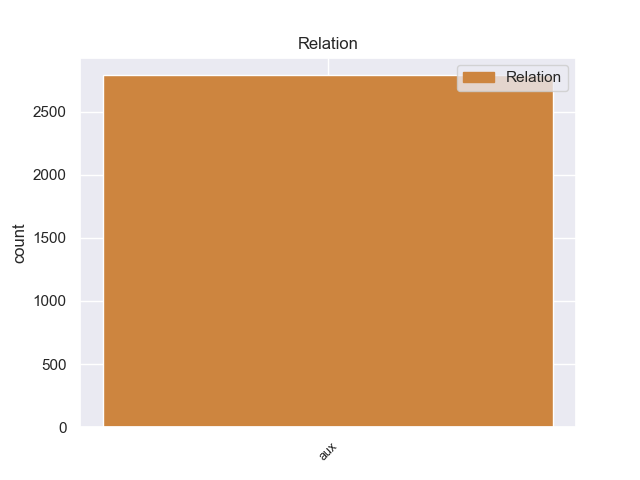
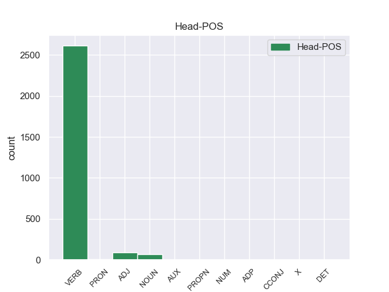
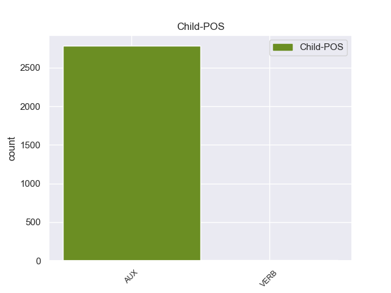

Distribution of features within this leaf



Morphosyntax Rules sorted by frequency.
- When the dependent token is the auxiliary(aux) of the head token, the Tense needs to be Pres.
1 En _ _ _ _ 0 _ _ _
2 el _ _ _ _ 0 _ _ _
3 caso _ _ _ _ 0 _ _ _
4 de _ _ _ _ 0 _ _ _
5 estrellas _ _ _ _ 0 _ _ _
6 variables _ _ _ _ 0 _ _ _
7 regulares _ _ _ _ 0 _ _ _
8 , _ _ _ _ 0 _ _ _
9 puede poder AUX _ Mood=Ind|Number=Sing|Person=3|Tense=Pres|VerbForm=Fin 10 aux _ _
10 determinar determinar VERB _ VerbForm=Inf 0 _ _ _
11 se _ _ _ _ 0 _ _ _
12 con _ _ _ _ 0 _ _ _
13 precisión _ _ _ _ 0 _ _ _
14 su _ _ _ _ 0 _ _ _
15 período _ _ _ _ 0 _ _ _
16 de _ _ _ _ 0 _ _ _
17 variabilidad _ _ _ _ 0 _ _ _
18 y _ _ _ _ 0 _ _ _
19 la _ _ _ _ 0 _ _ _
20 amplitud _ _ _ _ 0 _ _ _
21 de _ _ _ _ 0 _ _ _
22 el _ _ _ _ 0 _ _ _
23 mismo _ _ _ _ 0 _ _ _
24 . _ _ _ _ 0 _ _ _
non-conforming Examples:
1 Ella _ _ _ _ 0 _ _ _
2 a _ _ _ _ 0 _ _ _
3 el _ _ _ _ 0 _ _ _
4 enterar _ _ _ _ 0 _ _ _
5 se _ _ _ _ 0 _ _ _
6 de _ _ _ _ 0 _ _ _
7 que _ _ _ _ 0 _ _ _
8 él _ _ _ _ 0 _ _ _
9 podía poder AUX _ Mood=Ind|Number=Sing|Person=3|Tense=Imp|VerbForm=Fin 11 aux _ _
10 estar _ _ _ _ 0 _ _ _
11 vivo vivo ADJ _ Gender=Masc|Number=Sing 0 _ _ _
12 , _ _ _ _ 0 _ _ _
13 gracias _ _ _ _ 0 _ _ _
14 a _ _ _ _ 0 _ _ _
15 Daniel _ _ _ _ 0 _ _ _
16 , _ _ _ _ 0 _ _ _
17 insiste _ _ _ _ 0 _ _ _
18 en _ _ _ _ 0 _ _ _
19 ir _ _ _ _ 0 _ _ _
20 también _ _ _ _ 0 _ _ _
21 . _ _ _ _ 0 _ _ _
1 El _ _ _ _ 0 _ _ _
2 álbum _ _ _ _ 0 _ _ _
3 deriva _ _ _ _ 0 _ _ _
4 de _ _ _ _ 0 _ _ _
5 un _ _ _ _ 0 _ _ _
6 deseo _ _ _ _ 0 _ _ _
7 por _ _ _ _ 0 _ _ _
8 parte _ _ _ _ 0 _ _ _
9 tanto _ _ _ _ 0 _ _ _
10 de _ _ _ _ 0 _ _ _
11 Neil _ _ _ _ 0 _ _ _
12 Young _ _ _ _ 0 _ _ _
13 como _ _ _ _ 0 _ _ _
14 de _ _ _ _ 0 _ _ _
15 Stephen _ _ _ _ 0 _ _ _
16 Stills _ _ _ _ 0 _ _ _
17 de _ _ _ _ 0 _ _ _
18 completar _ _ _ _ 0 _ _ _
19 lo _ _ _ _ 0 _ _ _
20 que _ _ _ _ 0 _ _ _
21 habían haber AUX _ Mood=Ind|Number=Plur|Person=3|Tense=Imp|VerbForm=Fin 22 aux _ _
22 abandonado abandonar VERB _ Gender=Masc|Number=Sing|Tense=Past|VerbForm=Part 0 _ _ _
23 en _ _ _ _ 0 _ _ _
24 su _ _ _ _ 0 _ _ _
25 época _ _ _ _ 0 _ _ _
26 de _ _ _ _ 0 _ _ _
27 experimentación _ _ _ _ 0 _ _ _
28 con _ _ _ _ 0 _ _ _
29 Buffalo _ _ _ _ 0 _ _ _
30 Springfield _ _ _ _ 0 _ _ _
31 . _ _ _ _ 0 _ _ _
1 Una _ _ _ _ 0 _ _ _
2 vez _ _ _ _ 0 _ _ _
3 comienza _ _ _ _ 0 _ _ _
4 su _ _ _ _ 0 _ _ _
5 recorrido _ _ _ _ 0 _ _ _
6 se _ _ _ _ 0 _ _ _
7 encaja _ _ _ _ 0 _ _ _
8 entre _ _ _ _ 0 _ _ _
9 las _ _ _ _ 0 _ _ _
10 laderas _ _ _ _ 0 _ _ _
11 de _ _ _ _ 0 _ _ _
12 los _ _ _ _ 0 _ _ _
13 cerros _ _ _ _ 0 _ _ _
14 que _ _ _ _ 0 _ _ _
15 constituyen _ _ _ _ 0 _ _ _
16 esta _ _ _ _ 0 _ _ _
17 zona _ _ _ _ 0 _ _ _
18 de _ _ _ _ 0 _ _ _
19 Torozos _ _ _ _ 0 _ _ _
20 , _ _ _ _ 0 _ _ _
21 dibujando _ _ _ _ 0 _ _ _
22 un _ _ _ _ 0 _ _ _
23 estrecho _ _ _ _ 0 _ _ _
24 valle _ _ _ _ 0 _ _ _
25 que _ _ _ _ 0 _ _ _
26 en _ _ _ _ 0 _ _ _
27 otros _ _ _ _ 0 _ _ _
28 tiempos _ _ _ _ 0 _ _ _
29 fue _ _ _ _ 0 _ _ _
30 dedicado _ _ _ _ 0 _ _ _
31 a _ _ _ _ 0 _ _ _
32 pastizales _ _ _ _ 0 _ _ _
33 y _ _ _ _ 0 _ _ _
34 a _ _ _ _ 0 _ _ _
35 huerta _ _ _ _ 0 _ _ _
36 y _ _ _ _ 0 _ _ _
37 donde _ _ _ _ 0 _ _ _
38 el _ _ _ _ 0 _ _ _
39 paso _ _ _ _ 0 _ _ _
40 de _ _ _ _ 0 _ _ _
41 el _ _ _ _ 0 _ _ _
42 tiempo _ _ _ _ 0 _ _ _
43 nos _ _ _ _ 0 _ _ _
44 ha _ _ _ _ 0 _ _ _
45 dejado _ _ _ _ 0 _ _ _
46 - _ _ _ _ 0 _ _ _
47 si _ _ _ _ 0 _ _ _
48 no _ _ _ _ 0 _ _ _
49 restos _ _ _ _ 0 _ _ _
50 - _ _ _ _ 0 _ _ _
51 sí _ _ _ _ 0 _ _ _
52 el _ _ _ _ 0 _ _ _
53 recuerdo _ _ _ _ 0 _ _ _
54 de _ _ _ _ 0 _ _ _
55 abundantes _ _ _ _ 0 _ _ _
56 molinos _ _ _ _ 0 _ _ _
57 que _ _ _ _ 0 _ _ _
58 nos _ _ _ _ 0 _ _ _
59 hablan _ _ _ _ 0 _ _ _
60 de _ _ _ _ 0 _ _ _
61 la _ _ _ _ 0 _ _ _
62 forma _ _ _ _ 0 _ _ _
63 que _ _ _ _ 0 _ _ _
64 tenían _ _ _ _ 0 _ _ _
65 de _ _ _ _ 0 _ _ _
66 utilizar _ _ _ _ 0 _ _ _
67 la _ _ _ _ 0 _ _ _
68 poca _ _ _ _ 0 _ _ _
69 agua _ _ _ _ 0 _ _ _
70 de _ _ _ _ 0 _ _ _
71 el _ _ _ _ 0 _ _ _
72 río _ _ _ _ 0 _ _ _
73 para _ _ _ _ 0 _ _ _
74 múltiples _ _ _ _ 0 _ _ _
75 fines _ _ _ _ 0 _ _ _
76 y _ _ _ _ 0 _ _ _
77 , _ _ _ _ 0 _ _ _
78 ya _ _ _ _ 0 _ _ _
79 en _ _ _ _ 0 _ _ _
80 el _ _ _ _ 0 _ _ _
81 término _ _ _ _ 0 _ _ _
82 de _ _ _ _ 0 _ _ _
83 Meneses _ _ _ _ 0 _ _ _
84 , _ _ _ _ 0 _ _ _
85 el _ _ _ _ 0 _ _ _
86 molino _ _ _ _ 0 _ _ _
87 llamado _ _ _ _ 0 _ _ _
88 de _ _ _ _ 0 _ _ _
89 abajo _ _ _ _ 0 _ _ _
90 porque _ _ _ _ 0 _ _ _
91 antes _ _ _ _ 0 _ _ _
92 el _ _ _ _ 0 _ _ _
93 río _ _ _ _ 0 _ _ _
94 había haber AUX _ Mood=Ind|Number=Sing|Person=3|Tense=Imp|VerbForm=Fin 95 aux _ _
95 pasado pasar VERB _ Gender=Masc|Number=Sing|Tense=Past|VerbForm=Part 0 _ _ _
96 por _ _ _ _ 0 _ _ _
97 arriba _ _ _ _ 0 _ _ _
98 . _ _ _ _ 0 _ _ _
1 Es _ _ _ _ 0 _ _ _
2 así _ _ _ _ 0 _ _ _
3 como _ _ _ _ 0 _ _ _
4 el _ _ _ _ 0 _ _ _
5 16 _ _ _ _ 0 _ _ _
6 de _ _ _ _ 0 _ _ _
7 enero _ _ _ _ 0 _ _ _
8 de _ _ _ _ 0 _ _ _
9 2012 _ _ _ _ 0 _ _ _
10 inició _ _ _ _ 0 _ _ _
11 la _ _ _ _ 0 _ _ _
12 ejecución _ _ _ _ 0 _ _ _
13 de _ _ _ _ 0 _ _ _
14 actividades _ _ _ _ 0 _ _ _
15 de _ _ _ _ 0 _ _ _
16 demolición _ _ _ _ 0 _ _ _
17 , _ _ _ _ 0 _ _ _
18 replanteo _ _ _ _ 0 _ _ _
19 , _ _ _ _ 0 _ _ _
20 tala _ _ _ _ 0 _ _ _
21 de _ _ _ _ 0 _ _ _
22 árboles _ _ _ _ 0 _ _ _
23 y _ _ _ _ 0 _ _ _
24 movimiento _ _ _ _ 0 _ _ _
25 de _ _ _ _ 0 _ _ _
26 tierras _ _ _ _ 0 _ _ _
27 en _ _ _ _ 0 _ _ _
28 las _ _ _ _ 0 _ _ _
29 mismas _ _ _ _ 0 _ _ _
30 instalaciones _ _ _ _ 0 _ _ _
31 donde _ _ _ _ 0 _ _ _
32 se _ _ _ _ 0 _ _ _
33 había haber AUX _ Mood=Ind|Number=Sing|Person=3|Tense=Imp|VerbForm=Fin 34 aux _ _
34 proyectado proyectar VERB _ Gender=Masc|Number=Sing|Tense=Past|VerbForm=Part 0 _ _ _
35 la _ _ _ _ 0 _ _ _
36 construcción _ _ _ _ 0 _ _ _
37 de _ _ _ _ 0 _ _ _
38 La _ _ _ _ 0 _ _ _
39 Palma _ _ _ _ 0 _ _ _
40 Centro _ _ _ _ 0 _ _ _
41 Comercial _ _ _ _ 0 _ _ _
42 . _ _ _ _ 0 _ _ _
1 El _ _ _ _ 0 _ _ _
2 mayor _ _ _ _ 0 _ _ _
3 fue _ _ _ _ 0 _ _ _
4 quien _ _ _ _ 0 _ _ _
5 anunció _ _ _ _ 0 _ _ _
6 a _ _ _ _ 0 _ _ _
7 Alejandro _ _ _ _ 0 _ _ _
8 que _ _ _ _ 0 _ _ _
9 Darío _ _ _ _ 0 _ _ _
10 había haber AUX _ Mood=Ind|Number=Sing|Person=3|Tense=Imp|VerbForm=Fin 12 aux _ _
11 sido _ _ _ _ 0 _ _ _
12 arrestado arrestar VERB _ Gender=Masc|Number=Sing|Tense=Past|VerbForm=Part 0 _ _ _
13 por _ _ _ _ 0 _ _ _
14 Besos _ _ _ _ 0 _ _ _
15 . _ _ _ _ 0 _ _ _